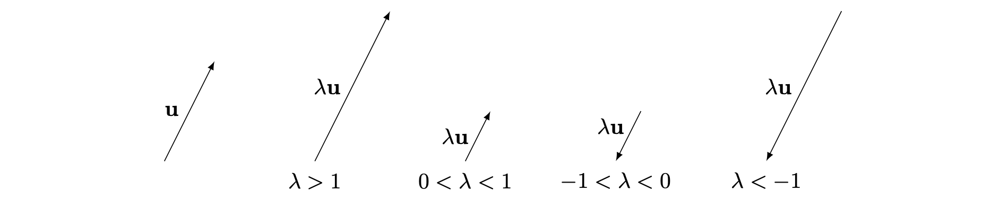

Addition and scalar multiplication
Before reading this guide, it is recommended that you read (Guide: Introduction to vectors).
What is vector addition and scalar multiplication?
One of the things you can do with vectors is to add them together. If you consider vectors have a magnitude and a direction, then graphically, you would join the head of one vector with the tail of another. While in i,j,k or vector notation, you sum up each of the components. This yields an important key to solving vectors problems: Each component can be considered independent to each other.
This guide will focus on introducing addition and scalar multiplication, how to calculate them and solve some equations involving vectors.
Vector Addition
For a vector \(\vec{a} = \pmatrix{a_1\\a_2}\) and \(\vec{b} = \pmatrix{b_1\\b_2}\), the addition of the two vectors \(\vec{a} + \vec{b} = \pmatrix{a_1 + b_1\\a_2 + b_2}\)
In i,j,k notation, if \(\vec{a} = a_1 \hat{i} + a_2 \hat{j}\) and \(\vec{b} = b_1 \hat{i} + b_2 \hat{j}\), then \(\vec{a} + \vec{b} = (a_1+b_1) \hat{i} + (a_2 + b_2) \hat{j}\)
Graphically, the addition of the vectors is the joining of one head of the vector to the tail of another.
For subtraction of vectors, inverse the direction of the vector first before joining them.
You may realize that it is scalar addition done in a component manner. Thus vector addition inherits properties from scalar addition as well.
Properties of vector addition
\(\vec{u} + \vec{v} = \vec{v} + \vec{u}\)
\((\vec{u} + \vec{v}) + \vec{w} = \vec{u} + (\vec{v} + \vec{w})\)
As vector addition is similar to scalar addition, then the rules for expanding brackets follow.
\(\vec{u} - \vec{v} + \vec{w} \neq\vec{u} - (\vec{v} + \vec{w})\)
The Zero vector
The zero vector \(\vec{0}\) is defined as a vector with zero length. This is different from the 0 scalar.
To represent the zero vector in column, \(\vec{0} = \pmatrix{0\\0\\0}\) In i.j.k form, \(\vec{0} = 0\hat{i} + 0\hat{j} + 0\hat{k}\).
The representation depends on the number of dimensions the vector.
The zero vector has the following properties:
\(\vec{0} + \vec{u} = \vec{u}\)
\(\vec{u} + (-\vec{u}) = \vec{0}\)
You are given \(\vec{a} = \pmatrix{3\\4}\) and \(\vec{b} = \pmatrix{5\\6}\). Then \(\vec{a} + \vec{b} = \pmatrix{3+5\\4+6} = \pmatrix{8\\10}\)
You are given \(\vec{a} = 3\hat{i} + 4\hat{j}\) and \(\vec{b} = -5\hat{i} - 6\hat{j}\). Then \(\vec{a} + \vec{b} =(3-5)\hat{i} + (4-6)\hat{j} = -2\hat{i} -2\hat{j}\)
You are given \(\vec{a} = 3\hat{i} + 4\hat{j}\) and \(\vec{b} = 2\hat{i} +8\hat{j} + 12\hat{k}\). Then \(\vec{a} + \vec{b} =(3+2)\hat{i} + (4+8)\hat{j} + (0 + 12)\hat{k} = 5\hat{i} + 12\hat{j} + 12\hat{k}\)
You are given \(\vec{a} = \pmatrix{2\\1\\0}\), \(\vec{b} = \pmatrix{7\\2\\1}\) and \(\vec{c} = \pmatrix{-3\\-2\\5}.\) Then \(\vec{a} + \vec{b} - \vec{c} = \pmatrix{2+7 - (-3)\\1+2-(-2)\\0 + 1 + 5} = \pmatrix{12\\5\\6}\)
Scalar multiplication
Given a vector \(\vec{a}\) and a scalar \(\lambda\), then \(\lambda \vec{a}\) is a vector that has the same direction as \(\vec{a}\) but with its length multiplied by \(\lambda\). If \(\lambda < 0\), then the direction of \(\vec{a}\) is reversed.
In column notation, if \(\vec{a} = \pmatrix{a_1\\a_2}\), then \(\lambda \vec{a} = \pmatrix{\lambda a_1\\ \lambda a_2}\)
In i,j,k notation, if \(\vec{a} = a_1\hat{i} + a_2\hat{j}\), then \(\lambda \vec{a} = \lambda a_1\hat{i} + \lambda a_2\hat{j}\)

Properties of scalar multiplication
Since vector addition is similar to component-wise multiplication, then it has the following properties for scalars \(\lambda\) and \(\mu\):
\(\lambda \mu \vec{a} = \lambda (\mu \vec{a})\)
\(( \lambda + \mu ) \vec{a} = \lambda \vec{a} + \mu \vec{a}\)
\(\lambda (\vec{a} + \vec{b}) = \lambda\vec{a} + \lambda\vec{b}\)
You are given \(\vec{a} = \pmatrix{3\\5\\6}\). Then \(5\vec{a} = \pmatrix{5\times3\\5\times5\\5\times6} = \pmatrix{15\\25\\30}\)
You are given \(\vec{b} = -2\hat{i} + 6\hat{j} - 7\hat{k}\). Then \(\vec{b} \times -3 = (-3)(-2)\hat{i} + (-3)6\hat{j} - (-3)7\hat{k} = 6\hat{i} -18\hat{j} + 21\hat{k}\)
Solving vector equations.
By combining addition and scalar multiplication, you can form vector equations. A property of vector equations is that the magnitudes of each component must be equal.
If \(\lambda \vec{a} + \mu \vec{b} = \vec{c}\)
Then in i,j,k notation, \(\vec{a} = a_1\hat{i} + a_2\hat{j}\),\(\vec{b} = b_1\hat{i} + b_2\hat{j}\) and \(\vec{c} = c_1\hat{i} + c_2\hat{j}\).
The equation gives \(\lambda(a_1\hat{i} + a_2\hat{j} )+ \mu(b_1\hat{i} + b_2\hat{j}) = c_1\hat{i} + c_2\hat{j}\)
In column notation,
\(\vec{a} = \pmatrix{a_1\\a_2}\), \(\vec{b} = \pmatrix{b_1\\b_2}\) and \(\vec{c} = \pmatrix{c_1\\c_2}\).
The equation gives \(\pmatrix{\lambda a_1 + \mu b_1\\ \lambda a_2 + \mu b_2} = \pmatrix{c_1\\c_2}\)
Both notations give the same simultaneous equations:
\(\begin{cases}\lambda a_1 + \mu b_1 = c_1\\\lambda a_2 + \mu b_2 = c_2\end{cases}\)
If we have some general vectors \(\vec{u}\) and \(\vec{v}\),then if \(\vec{u} = \lambda \vec{v}\), the two vectors must be parallel to each other.
If the coordinates of B are \(\pmatrix{-5,-2,-4}\) and \(\vec{AB} = \hat{i} + \hat{j} - 6\vec{k}\), then you can find the coordinates of A by solving the equation
\(\vec{AB} = \vec{OB} - \vec{OA}\).
Let \(A = \pmatrix{a_1\\a_2\\a_3}\)
\(\pmatrix{1\\1\\-6} = \pmatrix{-5\\-2\\-4} - \pmatrix{a_1\\a_2\\a_3}\), which gives the simultaneous equations
\(\begin{cases}1 = -5 - a_1 \\1 = -2-a_2 \\ -6 = -4 - a_3\end{cases}\)
Solving the equation gives \(a_1 = -6\), \(a_2 = -3\) and \(a_3 = 2\). So \(A = \pmatrix{-6\\-3\\2}\)
If \(\vec{u} = 4\hat{i} + 3\hat{j}\) and \(\vec{v} = -\hat{i} + 2\hat{j}\), you can express \(7\hat{i} + 19\hat{j}\) in terms of \(\vec{u}\) and \(\vec{v}\) by solving \(7\hat{i} + 19 \hat{j} = \lambda \vec{u} + \mu \vec{v} = (4\lambda \hat{i} + 3\lambda\hat{j}) + (-\mu\hat{i} + 2\mu\hat{j})\)
\(7\hat{i} + 19 \hat{j} = (4\lambda - \mu)\hat{i} + (3\lambda + 2\mu) \hat{j}\), which gives the simultaneous equations
\(\begin{cases} 7 = 4\lambda - \mu \dots(1) \\ 19 = 3\lambda + 2\mu\dots(2)\end{cases}\) Solving the equation gives \(\lambda = 3\) , \(\mu = 5\)
\(8\hat{i} + 9\hat{j} = 3\vec{u} + 5\vec{v}\)
Quick check problems
- If \(\vec{a} = \pmatrix{0\\-6\\2}\), then what is \(7\vec{a}\)?
Answer: \(7\vec{a}\) is equal to \(\hat{i}\) + \(\hat{j}\) + \(\hat{k}\).
- If \(\vec{b} = 2\hat{i} + 6\hat{k}\) and \(\vec{c} = -5\hat{i} + 3\hat{j} + 2\hat{k}\), then what is \(\vec{c} + 2\vec{b}\)?
Answer: \(\vec{c} + 2\vec{b}\) = \(\hat{i}\) + \(\hat{j}\) + \(\hat{k}\).
- Given that the coordinates \(A = \pmatrix{2\\-1\\4}\) and \(B = \pmatrix{3\\-3\\-6}\), what is the vector\(\vec{AB}\)?
Answer: \(\hat{i}\) + \(\hat{j}\) + \(\hat{k}\).
- You are given two statements below. Decide whether they are true or false.
If \(\lambda \vec{a} + \lambda \vec{b} = \vec{0}\) and \(\vec{a}\) and \(\vec{b}\) are non-zero vectors and not parallel to each other, then \(\lambda = \mu = 0\). Answer: .
If \(\vec{AB} = 2\vec{BC}\), the two vectors are perpendicular. Answer: .
For more questions on the subject, please go to Questions: Addition and scalar multiplication.